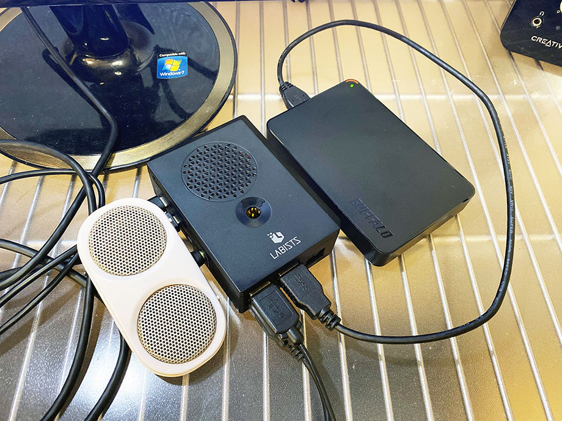

ラズパイ4に NTFS フォーマットされた外付け HDD を接続する : ntfs-3g
普段 Windows マシンに接続して使っている、NTFS 形式でフォーマットされた外付け HDD。コレをラズパイ4に繋いでみた。
Raspbian OS において NTFS フォーマットのドライブを認識させるには、ntfs-3g というパッケージをインストールする必要がある。
$ sudo apt install -y ntfs-3g
パッケージをインストール後、USB で接続すると、すぐに認識してくれた。ファイルの読み書きも正常に行えた。特にコレ以外の設定は必要なくて楽チンだった。

↑ 電源不要のミニスピーカーを左に挿し、右下の USB 3.0 ポートから外付け HDD を接続している。